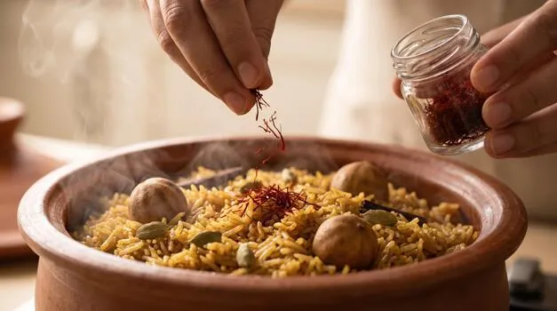
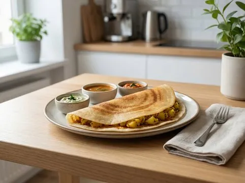
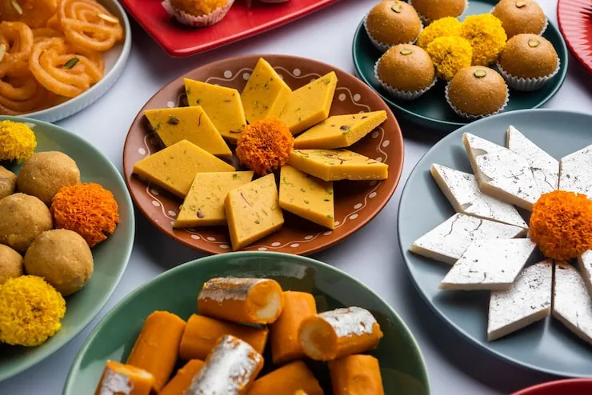

Famous Indian Foods
Home |
Destinations |
Foods |
Places |
Gallery |
Contact
Indian cuisine is known around the world for its diverse flavors, aromatic spices, and rich regional traditions. Every state offers a unique culinary experience.
5 Famous Indian Dishes
- Biryani
- Masala Dosa
- Butter Chicken
- Chole Bhature
- Palak Paneer
Food Categories
- North Indian
- South Indian
- Street Food
- Desserts
Dish Descriptions
- Biryani
- A flavorful mixed rice dish made with Indian spices, rice, and usually some type of meat or vegetables.
- Masala Dosa
- A popular South Indian crispy crepe made from a fermented batter of rice and lentils, filled with a potato curry.
- Gulab Jamun
- A classic Indian sweet made of milk solids, deep-fried and soaked in a sugary syrup flavored with cardamom.


